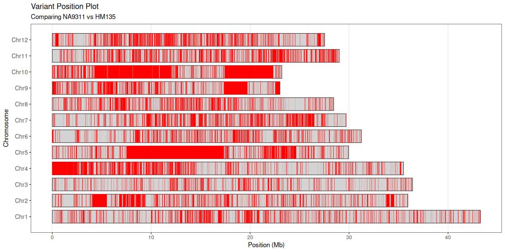

R ≥ 3.6 Open Source
An R script for plotting variant positions from VCF files, comparing genotypes between two samples across chromosomes.
This tool reads a tab-delimited file converted from VCF format (via GATK VariantsToTable) and creates visualizations showing variant positions across chromosomes. It compares genotypes between a baseline sample and a comparison sample, highlighting positions where they differ.

ggplot2, optparse, data.tableinstall.packages(c("ggplot2", "optparse", "data.table"))gatk VariantsToTable \
-V input.vcf \
-F CHROM -F POS -GF GT \
-O output.tableRscript vcf_difplot.R -i output.table -b sample1 -c sample2 -o variant_plot.pdfRscript vcf_difplot.R [options]| Flag | Description |
|---|---|
-i, --input FILE | Input tab-delimited file (required) |
| Flag | Description |
|---|---|
-b, --basename NAME | Baseline sample name |
-B, --basecol INT | Baseline sample column position (1-based) |
-c, --copname NAME | Comparison sample name |
-C, --copcol INT | Comparison sample column position (1-based) |
-b/-c) or the column-index flag (-B/-C). If both are given, the name takes precedence.| Flag | Default | Description |
|---|---|---|
-o, --output FILE | variant_plot.pdf | Output plot file (PDF, PNG, JPEG, SVG) |
-l, --chrlength FILE | auto-detect | Chromosome length file (CHROM LENGTH) |
-u, --unit NUM | 1e6 | Chromosome length unit (1e6=Mb, 1e3=kb) |
--baseHetcheck | off | Only include positions where baseline is homozygous |
--copHetcheck | off | Only include positions where comparison is homozygous |
--segmentColor COLOR | red | Color for variant position segments |
--segmentSize NUM | 0.5 | Thickness of variant segments |
--chrBorderColor COLOR | black | Color for chromosome borders |
--chrBorderSize NUM | 0.3 | Thickness of chromosome borders |
--output_table FILE | none | Write variant positions (CHROM, POS) to file |
-I, --interactive | off | Interactive mode: prompts for each parameter |
/ and | as separators (phased and unphased)A/T and T|A as equivalent (normalizes for comparison)./.) or wildcards (*/*)The script generates a plot where:
Supported output formats: PDF, PNG, JPEG, SVG. Format is determined by file extension.
Rscript vcf_difplot.R \
-i variants.table \
-b sample1 \
-c sample2 \
-o comparison.pdf \
-l chr_lengths.txt \
-u 1000000 \
--baseHetcheck \
--segmentColor red \
--segmentSize 0.5